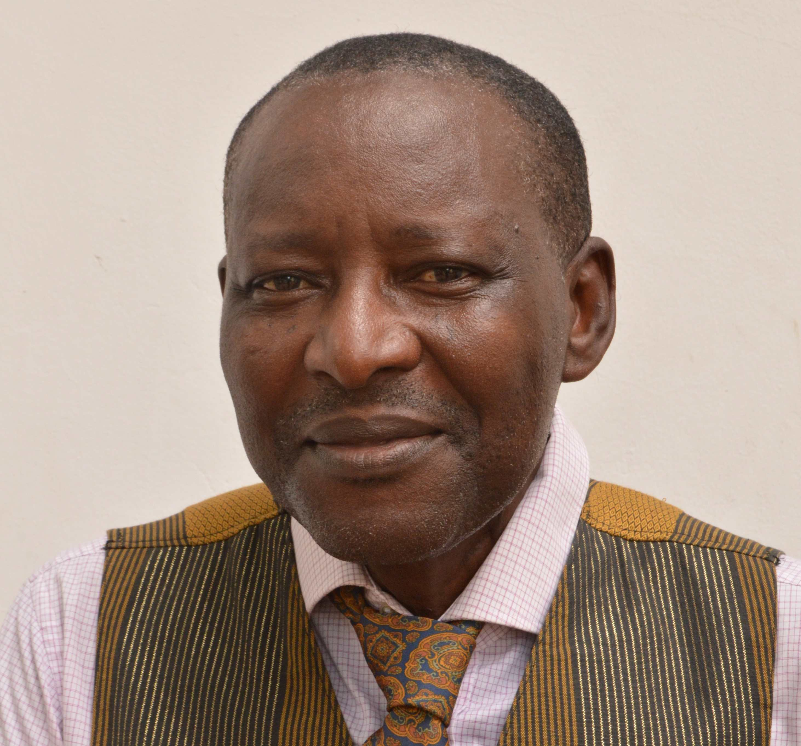
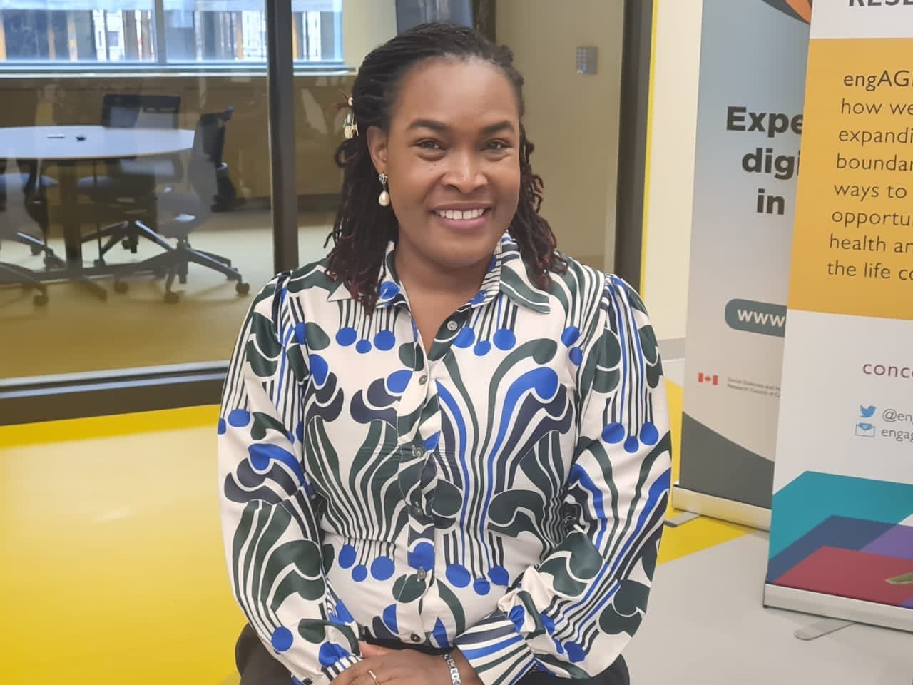
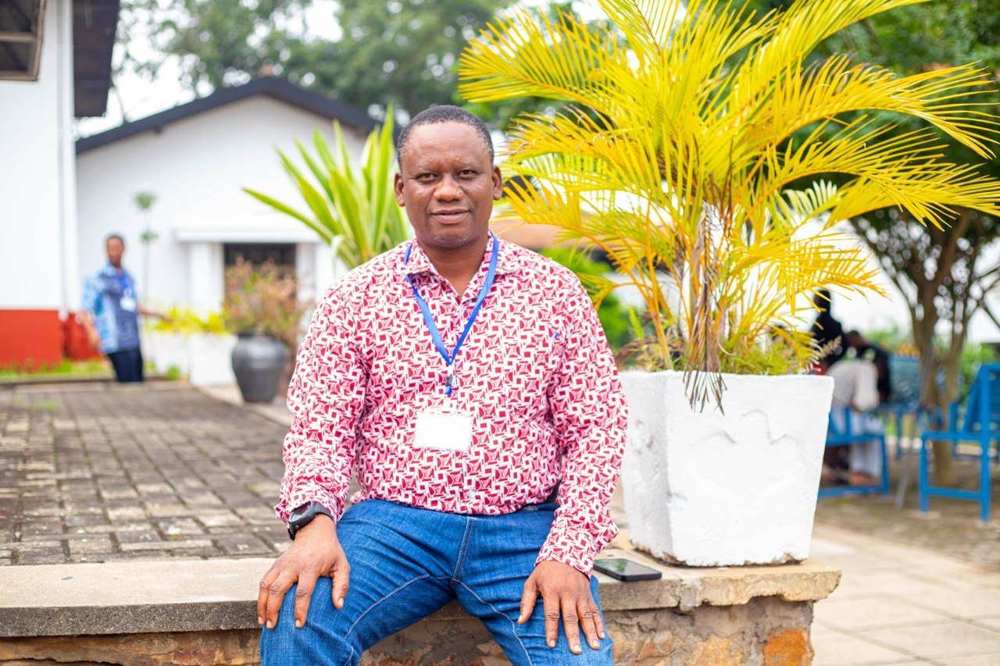

Guiding Minds
The GSAA is led by a National Convenor and governed through institutional representation from member universities.
Professor William Boateng leads the GSAA as National Convenor, coordinating association affairs, conferences, and institutional engagement across member universities. A distinguished scholar committed to advancing social science in Ghana.
View Full Structure →
Professor Steve Tonah served as the founding convenor who steered the re-launch and growth of GSAA, laying the groundwork for the association's institutional framework.
Head of the Sociology Department at the University of Ghana, Legon. Prof. Tetteh provides institutional leadership for GSAA's anchor department.

GSAA representative for the University of Ghana, contributing to association governance and promoting social science scholarship at UG.
Head of Department at the University of Cape Coast, providing academic leadership and institutional support for GSAA activities.

GSAA representative for the University of Cape Coast, supporting institutional coordination and scholarly engagement across disciplines.

Head of Department at KNUST, Kumasi. Prof. Manful provides leadership for social science teaching and GSAA institutional representation at KNUST.

GSAA representative for KNUST, contributing to association deliberations and strengthening social science collaboration across the institution.